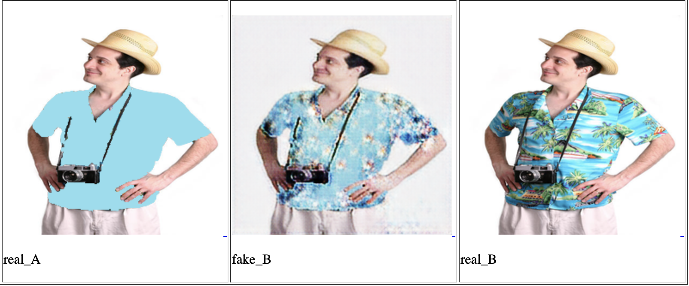

Hawaiify Me
Abstract
Hawaiify Me asks and answers the question: ”What if I were wearing a hawaiian shirt in this picture?” by generating bespoke hawaiin shirts on demand. Hawaiify Me differs from style transfer as it entirely masks out the boring old regular shirt and completely generating a totally tubular hawaiian shirt in its place. This allows it the capability to introduce shirt details such as collars in addition to patterns as opposed to overlaying a pattern on a given image.
Introduction
This project presents a proof of concept prototype for a tool that replaces shirts with hawaiian shirts. A user could submit an image of themselves wearing a regular shirt, and Hawaiify Me would generate a new Hawaiian style shirt to replace it. Hawaiify Me makes use of an aggregated toolset of existing tools and frameworks such as pix2pix for image translation, VIA for image labeling and Mask R-CNN for generating masks from labeled images. The purpose of this project is simply to be a fun experiment making use of the current tools available.


Method
Datasets were comprised of images of isolated hawaiian shirts on a black background. Images were scraped from royalty free stock image website Shutterstock.com, using the search term ”hawaiian shirt”. The dataset was filtered to remove photos of a shirt on a clothes rack or table, as there was concern this would make generated shirts look flat and unnatural when reapplied to a human context. Images were also removed if the shirt and subject were too small/not the main focus of the image, or if the shirt was highly obscured by the subjects hair, arms or other clothing.
The remaining images were resized to 256x256 and were then input into VIA to outline and images of hawaiian shirts. These labels could then be exported as json files, which Mask R-CNN could read to generate a mask of the labeled area. These masks were then used with pix2pix’s composite functions on the original image to create the isolated shirt image. Hawaiify Me’s final model was trained for 450 epochs using a final dataset of 278 images. The composite function would also be used at the end of the process to complete the image. Once model had generated a new hawaiian style shirt, pix2pix could use the existing mask label to composite the generated shirt back to where the old shirt had been.
Experiments
Initial experimentation did not use VIA or Mask R-CNN, and instead used photoshop to manually blank out shirts. Then a pix2pix based GAN use these shirts as an input and the unedited image as the expected output. An example of a shirt generated by the first GAN using only pix2pix. This same dataset was reversed, using the blanked out shirts as the output, so that in future the AI would be able to work with any input shirt by creating a blank canvas. However in some cases the AI would interfere with the image outside of the shirt.

Due to the interference with the image outside of the shirt, I sought other solutions. Abdulla’s (2018) article on building a color splash filter introduced Mask R-CNN and VIA, allowing for the mask based approach Hawaiify Me currently uses. The masks generated would provide a blank canvas for the model to focus exclusively on shirt generation, as detailed in the Method section. These experiments saw a greater deal of accuracy and success, however some images did not feature particularly distinct patterns, and still showed some indistinct visual noise after 200 epochs of training. To account for this I increased the training epochs to 450 which generated significantly more distinct patterns, though some colours of shirts showed specific patterns more clearly than others.
Results
By providing the model with only images of isolated hawaiian shirts to train on, the model was better at learning structural details of the shirts as well as patterns. The most apparent case of this is when a collar is added to an uncollared shirt, or when shadows or wrinkles are added in appropriate locations. Generally images were brightly coloured and featuring multiple different colours which provides interesting visual flair to any image.
The model will show no preference for the base colour of the input shirt as it is generating shirts based solely on the mask provided. Shape of the mask is the most important factor in determining the effectiveness of the generated images, masks with little detail seem the least shirt-like. The inclusion of many ”non-traditional” hawaiian shirts featuring muted colours will have caused for occasional grey shirts to be generated, which feature similarities to hawaiian shirts but at a glance are not immediately identifiable as hawaiian.
Further Development
Further development of Hawaiify Me would want to automate many processes, including training a model to programmatically mask and isolate the shirt from any given input image. Current use of Hawaiify Me still requires input images to be manually labeled through VIA, which currently presents a bottleneck in content generation.
Hawaiify Me struggles with baggy or wrinkled clothing images, and may not appropriately recreate an article of clothing in a sensible shape. Images of subjects wearing long sleeved shirts with their arms crossed may result in the sleeves losing visual distinction from the chest of the shirt.
Images with long sleeved crossed arms were filtered out of the training set for fear of contaminating the model, but the addition of more models may better account for this. Ideally Hawaiify Me would if further developed use multiple models with specific purposes, such as a model trained for crossed arms or for specific clothing such as jackets, hoodies or even bare skin.
Conclusion
Hawaiify Me is an incomplete though functional prototype, and exists as evidence of the approachability of machine learning using the existing tools and frameworks available in the community. Hawaiify me is capable of producing highly successful recognisable images of Hawaiian themed shirts, but also is capable of generating more muted grey shirts in equal quantities. Hawaiify Me is a labor of love for an under appreciated fashion trend.
References
Abdulla, W. (2018) Splash of Color: Instance Segmentation with Mask R-CNN and TensorFlow. [Online Article] Matterport Engineering Techblog. Retrieved from: https://engineering.matterport.com/splash-of-color-instance-segmentation-with-mask-r-cnn-and-tensorflow-7c761e238b46
Dutta, A., & Zisserman. A. (2019). The VIA Annotation Software for Images, Audio and Video. Proceedings of the 27th ACM International Conference on Multimedia (MM ’19), Nice, France. New York, New York: ACM. https://doi.org/10.1145/3343031.3350535
He, K., Gkioxari, G., & Doll, P. (2017). Mask R-CNN. arXiv. Retrieved from: https://arxiv.org/abs/1703.06870
Isola, P., Zhu, J.-Y., Zhou, T., & Efros, A. A. (2016). Image-to-Image Translation with Conditional Adversarial Networks. arXiv. Retrieved from http://arxiv.org/abs/1611.07004